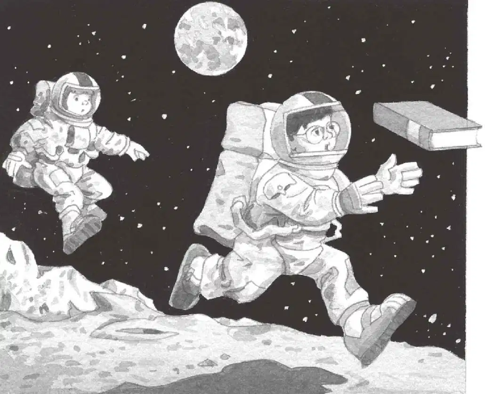

“哦，天哪！”安妮惊叫起来。她往前跨了一步。
杰克却一动不动地站着。他想先仔细看看周围的情况。
他打量着脚下。地上是一层灰色的尘土，尘土细得像粉末一样。
到处都是脚印。杰克暗自纳闷儿这些脚印是谁留下的。
他把手伸进背包，去掏那本月球书，却吃惊地发现月球书轻得像一根羽毛！
他找到一幅图片，上面画着月球上的脚印。他把文字念了出来：
月球上没有风和雨。因此，脚印永远不会自然消失，哪怕过去了几万年。
“哦，天哪。”杰克说。
他从没见过像月球这样的地方，静止得就像一幅画。而且，它好像会永远这样静止下去。
杰克望着漆黑一片的天空，一个漂亮的蓝白相间的球体在远处微微闪烁。
地球。
杰克第一次真正意识到他们是在外太空。
“看！”安妮大喊一声，咯咯笑了起来。
她在杰克身边跳起——简直像腾空飞起来似的。她落到地上，接着又一下跳得老高。
“我是一只月兔。”她大声说道。
杰克也笑了，他想：“安妮是怎么做到的呢？”他把月球书翻到下一页，念道：
人在月球上体重会变轻，因为月球引力小，而且空气稀薄。
如果在地球上你的体重显示为27千克，那么在月球上则只显示为4.5千克了。
“别站在那儿看书啦！”安妮说着把月球书从杰克手里夺了过去，扔向太空。
月球书飞走了，杰克拔腿去追。
他一下子跳得好高，然后慢慢落下。腾！腾！腾！这时候，他也觉得自己像羽毛一样轻盈了。
“看！”他大声对安妮喊道，“我也变成了一只月兔。”

杰克的靴子落在地上，月球表面的尘土被溅起来，优美地飞入了太空。
月球书掉在了一个浅坑的边缘。
杰克伸手去够，可脚下一滑摔倒了。
杰克侧身躺在地上。他想站起来，却怎么也找不到平衡。
他又试了一次，可是他的宇航服太笨重了。
“你没事吧？”安妮问道。
“我站不起来了。”杰克回答。
“你不应该乱来的。”安妮一本正经地说。
“是你先乱来的。”杰克说，“好了，求求你，快把我扶起来吧。”
安妮朝他走过来。
“你可不要也摔倒了。”杰克提醒她。
“不会的。”安妮移动的速度很慢，差不多是半走半飘。
“把你的手给我。”她说。
安妮抓住杰克的手。她用靴子顶住杰克的靴子，把杰克拉了起来。
“谢谢。”杰克说。
“没事儿，”安妮说，“不费什么劲儿，你真轻。”
“谢天谢地。”杰克说，“一个人根本站不起来。”
他捡起那本月球书。上面全是尘土，他用手掸了掸。
“哦，天哪！快看！”安妮说。
“什么？”杰克问道。
“一辆月球探险车！”安妮回答。
月球探险车停在坑里，有四个巨大的轮子。
“我们坐车逛逛吧。”安妮提议。
“不行，”杰克说，“罐子里的空气只够我们用两个小时。你忘了吗？”
“但如果坐上月球探险车，我们准能更快地找到那样东西！”安妮说着一下子跳到车里。
“可是我们不会开车呀！”杰克说。
“这辆车我肯定会开！”安妮很有把握地说，“看上去很简单，来吧！”
她跳上驾驶员的座位。
“可是你没有驾照！”杰克说。
“谁还管这个呀？”安妮说，“月球上没有路，没有红绿灯，也没有警察。”
杰克想：“安妮说得对。”
“好吧，开慢一点儿。”杰克说着钻进月球探险车，坐在安妮旁边。
安妮按了下写着“开”的按钮。
月球探险车突然开始后退。
“哎呀！”安妮叫了起来。
“快踩刹车！”杰克嚷道。
安妮踩住月球探险车底板上的一个踏板。它一下子停住了。
“好吓人啊！”安妮说。
“肯定是弄反了。”杰克说，“我来研究一下这个。”
可是没等他开始研究，安妮就按了另一个按钮。
月球探险车向后仰起，两个前轮悬空了起来。
“放我出去！”杰克说。
安妮啪啪啪又按了几个按钮。
月球探险车的前轮重新落到坑里，接着开始噌噌地往前跳。
“慢一点儿！”杰克紧张地说。
“慢不下来。”安妮说，“我不知道怎么减速！”
安妮把月球探险车的方向调整了一下。车轮很宽，这样车子才不会陷到厚厚的尘土里。
“当心！”杰克喊了一声。
嗖的一下，月球探险车从坑里冲了出去。
月球探险车在月球表面行驶，后面腾起一团团尘雾。